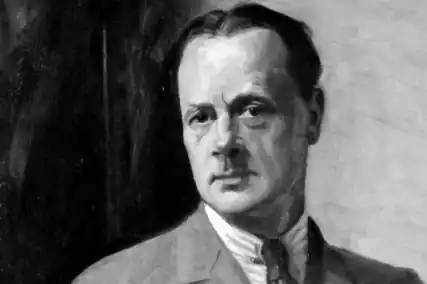
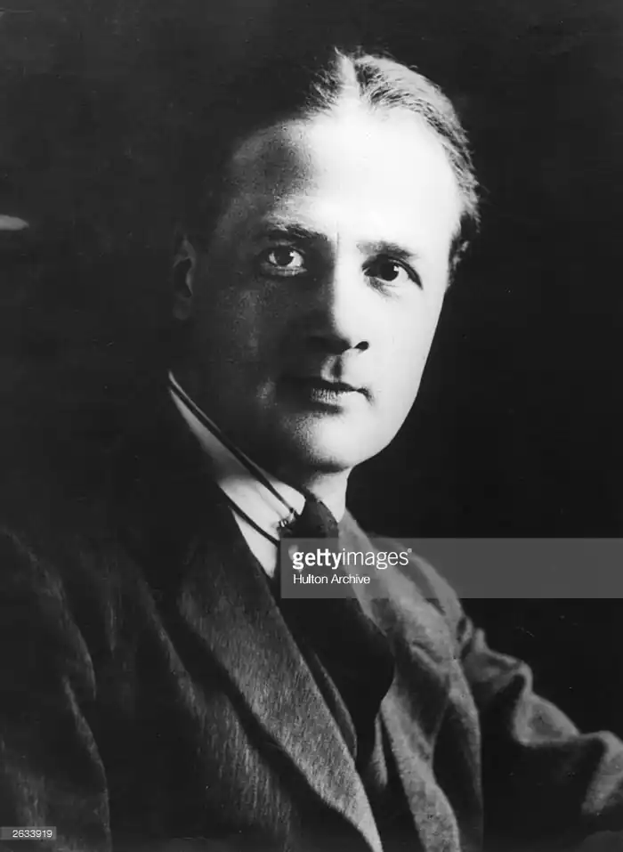

Рафаель Сабатіні, англійський письменник, народився 29 квітня 1875 року в родині оперних співаків. Батьки Рафаеля продовжували театральну кар'єру, тому хлопчик жив у родичів в Англії. Незабаром сім'я Сабатіні возз'єднується і проживає в Порту, в якому майбутній письменник отримує початкову освіту. Після школи він відбуває в Ліверпуль і працює перекладачем.
У 1890-х роках Сабатіні пише розповіді для англійських журналів. У 1901 році він отримує контракт на роман і в 1904 році видає свою першу книгу. У 1905 році він поєднується шлюбом з дочкою ліверпульського комерсанта, і молода сім'я переїжджає в Лондон. Під час Першої світової війни письменник працює на англійську розвідку, виступаючи в ролі перекладача. У 1921 році автор видає свій перший бестселер — роман "Скарамуш", який ілюструє часи французької революції.
Величезний успіх письменникові приносить роман "Одіссея капітана Блада", який стає його magnumopus. У цьому романі образ головного героя заснований на біографії знаменитого пірата Генрі Моргана, прикрашеного такими рисами як доброта, безкорисливість і справедливість. На творчість Рафаеля сильно вплинули роботи і біографія Даніеля Дефо. Письменник плідно працював, він публікував романи практично щороку. У 1927 році в родині Сабатіні відбувається трагедія — його єдиний син гине в результаті автокатастрофи, автор впадає в депресію і незабаром розлучається з дружиною. У період Другої світової війни у автора починаються проблеми зі здоров'ям. Рафаель Сабатіні помер 13 лютого 1950 року в Швейцарії.